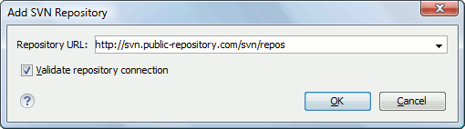

SVN Main Menu
The main menu of the Syncro SVN Client is composed of the following menus:
- File Menu
-
- New submenu:
-
- New File
- This operation creates a new file as a child of the selected folder from the Repositories view tree or the Working Copy view tree, depending on the view that was last used. Note that for the Working Copy view, the file is added to version control only if the selected folder is under version control.
- New Folder(Ctrl + Shift + F (Command + Shift + F on OS X))
- This operation creates a new folder as a child of the selected folder from the Repositories view tree or the Working Copy view tree, depending on the view that was last used. Note that for the Working Copy view, the file is added to version control only if the selected folder is under version control.
- New External Folder (Ctrl + Shift + W (Command + Shift + W on OS X))
-
This operation allows you to add a new external definition on the selected folder. An external definition is a mapping of a local directory to a URL of a versioned directory, and ideally a particular revision, stored in the
svn:externalsproperty of the selected folder.Tip: You can specify a particular revision of the external item by using a peg revision at the end of the URL (for example,URL@rev1234). You can also use peg revisions to access external items that were deleted, moved, or replaced.The URL used in the external definition format can be relative. You can specify the repository URL that the external folder points to by using one of the following relative formats:Important: To change the target URL of an external definition, or to delete an external item, do the following:Note: Syncro SVN Client does not support definitions of local relative external items.
- Open (Ctrl + O (Command + O on OS X))
- This action opens the selected file in an editor where you can modify it. The action is active only when a single item is selected. The action opens a file with the internal editor or the external application associated with that file type. This action works on any file selection from the Repositories view, Working Copy view, History view, or Directory Change Set view, depending on the view that was last used to invoke it. In the case of a folder, the action opens the selected folder with the system application for folders (for example, Windows Explorer on Windows or Finder on OS X). Note that opening folders is available only for folders selected in the Working Copy view.
- Open with(Ctrl + Shift + O (Command + Shift + O on OS X))
- Displays the Open with dialog box for specifying the editor where the selected file is opened. If multiple files are selected only external applications can be used to open the files. This action works on any file selection from Repositories view, Working Copy view, History view, or Directory Change Set view, depending on the view that was last used to invoke it.
- Opens the parent directory of the selected working copy file and selects the file.
- Save (Ctrl + S (Command + S on OS X))
- Saves the local file currently opened in the editor or the Compare view.
- Save as
- Saves any file selected in the Repositories, History, or Directory Change Set view.
- Copy URL Location (Ctrl + Alt + U (Command + Alt + U on OS X))
- Copies the URL location of the resource currently selected in the Repositories view to clipboard.
 Copy to
Copy to- Copies the currently selected resource, either in
Repositories or Working copy
view, to a specified location. Note: This action can also be used from History and Directory Change Set views to recover older versions of a repository item.
- Move to(Ctrl + M (Command + M on OS X))
- Moves the currently selected resource, either in Repositories or Working copy view, to a specified location.
- Rename(F2)
- Renames the resource currently selected, either in Repositories or Working copy view.
 Delete
(Delete)
Delete
(Delete)- Deletes the resource currently selected either, in Repositories or Working copy view.
-
- Scan for locks (Ctrl + L (Command + L on OS X)) - Contacts the repository and recursively obtains the list of locks for the selected resources. A dialog box containing the locked files and the lock description will be displayed. This is only active for resources under version control. For more details see Scanning for locks.
- Lock (Ctrl + K (Command + K on OS X)) - Allows you to lock certain files that need exclusive access. You can write a comment describing the reason for the lock and you can also force (steal) the lock. This action is active only on files under version control. For more details on the use of this action see Locking a file.
- Unlock (Ctrl + Alt + K (Command + Alt + K on OS X)) - Releases the exclusive access to a file from the repository. You can also choose to unlock it by force (break the lock).
 Show SVN Properties (Ctrl + P (Command + P
on OS X))
Show SVN Properties (Ctrl + P (Command + P
on OS X))- Opens the Properties view and displays the SVN properties for a selected resource from Repositories view or Working Copy view, depending on the view that was last used to invoke it.
 Show SVN
Information (Ctrl + I (Command + I on OS
X))
Show SVN
Information (Ctrl + I (Command + I on OS
X))- Provides additional information for a selected resource. For more details, go to Obtain information for a resource.
- Exit (Ctrl + Q (Command + Q on OS X))
- Closes the application.
- Edit Menu
-
 Undo
(Ctrl + Z (Command + Z on OS X))
Undo
(Ctrl + Z (Command + Z on OS X))- Undo edit changes in the local file that is currently opened in the editor or the Compare view.
- Redo (Ctrl + Y (Command + Y on OS X))
- Redo edit changes in the local file that is currently opened in the editor or the Compare view.
 Cut
(Ctrl + X (Command + X on OS X))
Cut
(Ctrl + X (Command + X on OS X))- Cut selection from the local file that is currently opened in the editor view or the Compare view to clipboard.
 Copy
(Ctrl + C (Command + C on OS X))
Copy
(Ctrl + C (Command + C on OS X))- Copy selection from the local file that is currently opened in the editor or the Compare view to clipboard.
 Paste
(Ctrl + V (Command + V on OS X))
Paste
(Ctrl + V (Command + V on OS X))- Paste selection from clipboard into the local file that is currently opened in editor or the Compare view.
 Find/Replace (Ctrl + F (Command + F on OS
X))
Find/Replace (Ctrl + F (Command + F on OS
X))- Perform find and replace operations in the local file that is currently opened in the editor or the Compare view.
- Find Next (F3)
- Go to the next match using the same find options of the last find operation. This action runs in the editor panel and in any non-editable text area (for example, the Console view).
 Find Previous (Shift + F3)
Find Previous (Shift + F3)- Go to the previous match using the same find options of the last find operation. This action runs in the editor panel and in any non-editable text area (for example, the Console view).
- Repository Menu
-
 New Repository Location ()
New Repository Location ()-
Displays the Add SVN Repository dialog box. This dialog box allows you to define a new repository location.
Figure 1. Add SVN Repository Dialog Box If the Validate repository connection option is selected, the URL connection is validated before being added to the Repositories view.
 Edit Repository Location ()
Edit Repository Location ()- Context-dependent action that allows you to edit the selected repository location using the Edit SVN Repository dialog box. It is active only when a repository location root is selected.
- Context-dependent action that allows you to change the selected repository revision using the Change the Revision to Browse dialog box. It is active only when a repository location root is selected.
- Remove
Repository Location ()
- Allows you to remove the selected repository location from the view. It shows you a confirmation dialog box before removal. It is active only when a repository location root is selected.
 Refresh (F5)
Refresh (F5)- Refreshes the resource selected in the Repositories view.
 Check
out ()
Check
out ()- Allows you to create a working copy from a repository directory, on your local file system. To read more about this operation, see Check out a working copy.
- Opens the Export dialog box that allows you to configure options for exporting a folder from the repository to the local file system.
-
- Working Copy Menu
-
- Working Copies Manager (
 on OS
X)
on OS
X) - Opens a dialog box with a list of working copies that the Apache Subversion client is aware of. In this dialog box you can add existing working copies or remove those that are no longer needed.
- Switch to
- Selects one of the following view modes:
 All Files,
All Files,  Modified,
Modified,
 Incoming,
Incoming,  Outgoing, or Conflicts.
Outgoing, or Conflicts. - Refresh (F5)
- Refreshes the state of the selected resources or of the entire working copy (if there is no selection).
 Synchronize (Ctrl + Shift + S (Command + Shift + S on OS
X))
Synchronize (Ctrl + Shift + S (Command + Shift + S on OS
X))- Connects to the repository and determines the working copy and repository changes made to the selected resources. The application switches to Modified view mode if the Always switch to 'Modified' mode option is selected.
- Update (Ctrl + U (Command + U on OS X))
- Updates all the selected resources that have incoming changes to the HEAD revision. If one of the selected resources is a directory then the update for that resource will be recursive.
- Allows you to update the selected resources from the working copy to an earlier revision from the repository. You can also select the update depth for the current folder. You can find out more about the depth term in the sparse checkouts section.
- Collects the outgoing changes from the selected resources in the working copy and allows you to choose exactly what resources to commit. A directory will always be committed recursively. Unversioned resources will be deselected by default. In the Commit dialog box you can also enter a comment before sending your changes to the repository.
 Update all(Ctrl + Shift + U (Command + Shift + U on OS
X))
Update all(Ctrl + Shift + U (Command + Shift + U on OS
X))- Updates all resources from the working copy that have incoming changes. It performs a recursive update on the synchronized resources.
- Commit all
- Commits all the resources with outgoing changes. It is disabled when Incoming mode is selected or the synchronization result does not contain resources with outgoing changes. It performs a recursive commit on the synchronized resources.
- Undoes all local changes for the selected resources. It does not contact the repository and the files are obtained from Apache Subversion pristine copy. It is available only for modified resources. See Revert your changes for more information.
- Opens the Compare editor, allowing you to modify the content of the currently conflicting resources. For more information about editing conflicts, see Edit conflicts.
 Mark
Resolved (Ctrl + Shift + R (Command + Shift + R on OS
X))
Mark
Resolved (Ctrl + Shift + R (Command + Shift + R on OS
X))- Instructs the Subversion system that you resolved a conflicting resource. For more information, see Merge conflicts.
 Mark
as Merged (Ctrl + Shift + M (Command + Shift + M on OS
X))
Mark
as Merged (Ctrl + Shift + M (Command + Shift + M on OS
X))- Instructs the Subversion system that you resolved the pseudo-conflict by merging the changes and you want to commit the resource. Read the Merge conflicts section for more information about how you can solve the pseudo-conflicts.
- Drops any outgoing change and replaces the local resource with the HEAD revision. This action is available on resources with outgoing changes, including conflicting ones. See the Revert your changes section.
- Drops any incoming changes and sends your local version of the resource to the repository. This action is available on conflicting resources. For more information see Drop incoming modifications.
- You can use this action to mark an item from the working copy as a copy of another item under version control, when the copy operation was performed outside of an SVN client. The Mark as copied action is available when you select two items (both the new item and source item), and it depends on the state of the source item.
- You can use this action to mark an item from the working copy as being moved from another location of the working copy, when the move operation was performed outside of an SVN client. The Mark as moved action is available when you select two items from different locations (both the new item and the source item that is usually reported as missing), and it depends on the state of the source item.
- You can use this action to mark an item from the working copy as being renamed outside of an SVN client. The Mark as renamed action is available when you select two items from the same directory (both the new item and the source item that is usually reported as missing), and it depends on the state of the source item.
- Allows you to add files that should not participate in the version
control operations inside your working copy. This action can only be
performed on resources not under version control. It actually modifies
the value of the
svn:ignoreproperty in the parent directory of the resource. Read more about this in the Ignore Resources Not Under Version Control section. - Allows you to add resources that are not under version control. For further details, see Add Resources to Version Control section.
- Schedules the selected items for deletion from repository upon the next commit. The items are not removed from the file system after committing.
- Performs a maintenance cleanup operation on the selected resources from the working copy. This operation removes the Subversion maintenance locks that were left behind. This is useful when you already know where the problem originated and want to fix it as quickly as possible. It is only active for resources under version control.
 Expand All
(Ctrl + Alt + X (Command + Alt + X on OS
X))
Expand All
(Ctrl + Alt + X (Command + Alt + X on OS
X))- Displays all descendants of the selected folder. The same behavior is obtained by double-clicking a collapsed folder.
- Collapse all (Ctrl + Alt + Z (Command + Alt + Z on OS X))
- Collapses all descendants of the selected folder. The same behavior is obtained by double-clicking an expanded folder.
- Working Copies Manager (
- Compare Menu
-
 Perform Files
Differencing
Perform Files
Differencing Next
Block of Changes ()
Next
Block of Changes ()- Jumps to the next block of changes. This action is not available when the cursor is
positioned on the last change block or when there are no changes.Note: A change block groups one or more consecutive lines that contain at least one change.
- Previous Block of Changes ()
- Jumps to the previous block of changes. This action is not available when the cursor is positioned on the first change block or when there are no changes.
- Next Change ()
- Jumps to the next change from the current block of changes. When the last change from the current block of changes is reached, it highlights the next block of changes. This action is not available when the cursor is positioned on the last change or when there are no changes.
 Previous
Change ()
Previous
Change ()- Jumps to the previous change from the current block of changes. When the first change from the current block of changes is reached, it highlights the previous block of changes. This action is not available when the cursor is positioned on the first change or when there are no changes.
 Last Change ()
Last Change ()- Jumps to the last change.
- First Change ()
- Jumps to the first change.
 Copy All Changes from Right to Left
Copy All Changes from Right to Left- Copies all changes from the file in the right panel to the file in the left panel.
 Copy Change from Right to Left
Copy Change from Right to Left- Copies the selected difference from the file in the right panel to the file in the left panel.
 Show
Word Level Details
Show
Word Level Details- Provides a word-level comparison of the selected change.
 Show
Character Level Details
Show
Character Level Details- Provides a character-level comparison of the selected change.
 ormat and Indent Both Files ()
ormat and Indent Both Files ()- Formats and indents both files before comparing them.
Use this option for comparisons that contain long lines that make it difficult to spot
differences.Note: When comparing two JSON files, the Format and Indent Both Files action will automatically sort the keys in both files the same to make it easier to compare.
 Ignore Whitespaces
Ignore Whitespaces- Enables or disables the whitespace ignoring feature. Ignoring whitespace means that before performing the comparison, the application normalizes the content and trims its leading and trailing whitespaces.
- History Menu
-
 Show History(Ctrl + H (Command + H on OS
X))
Show History(Ctrl + H (Command + H on OS
X))- Displays the history for an SVN resource at a given revision. The resource can be one selected from the Repositories view, Working Copy view, or from the Affected Paths table from the History view, depending on which view was last focused when this action was invoked.
 Show Annotation ()
Show Annotation ()- Opens the Show Annotation dialog box that computes the annotations for a file and displays them in the Annotations view, along with the history of the file in the History view.
- Repositories
- This operation is available for any resource selected from view, Working Copy view, History view or Directory Change Sets view, depending on which view was last focused when this action was invoked.
 Revision Graph (Ctrl + G (Command + G on OS
X))
Revision Graph (Ctrl + G (Command + G on OS
X))- This action allows you to see the graphical representation of a resource's history. For more details about a resource's revision graph see the section Revision Graph. This operation is available for any resource selected in the Repositories view or Working Copy view.
- Tools Menu
-
- Allows you to share a new project using an SVN repository. The local project is automatically converted into an SVN working copy.
- Branch / Tag
- Allows you to copy the selected resource from the Repositories view or Working Copy view to a branch or tag into the repository. To read more about this operation, see the section Creating a Branch / Tag.
 Merge
(Ctrl + J (Command + J on OS X))
Merge
(Ctrl + J (Command + J on OS X))- Allows you to merge the changes made on one branch back into the trunk, or vice versa, using the selected resource from the working copy. To read more about this operation, see the section Merging.
- Switch (Ctrl + Alt + W (Command + Alt + W on OS X))
- Allows you to change the repository location of a working copy, or only of a versioned item of the working copy, within the same repository. It is available when the selected item of the working copy is a versioned resource, except for external items. To read more about this action, see the Switching the Repository Location section.
- Relocate
- Allows you to change the base URL of the root folder of the working copy to a new URL when the base URL of the repository changed. For example, if the repository itself was moved to a different server. This operation is only available for the root item of the working copy. To read more about this operation, see the Relocate a Working Copy section.
 Create
patch (Ctrl + Alt + P (Command + Alt + P on OS
X))
Create
patch (Ctrl + Alt + P (Command + Alt + P on OS
X))- Allows you to create a file containing all the differences between two
resources, based on the
svn diffcommand. To read more about creating patches, see the section about patches. - Working copy format
-
This submenu contains the following two operations:
- Upgrade
- Upgrades the format of the currently loaded working copy to the newest one known by Syncro SVN Client. This allows you to benefit of all the new features of the client.
 Downgrade
Downgrade - Downgrades the format of the currently loaded working copy to SVN 1.7
format. This is useful if you want to use older SVN clients with the
current working copy, or, by mistake, you have upgraded the format of an
older working copy to SVN 1.8. Note: SVN 1.7 working copies cannot be downgraded to older formats.
See the section Working Copy Format to read more about this subject.
- Options Menu
-
- Preferences
- Opens the Preferences dialog box.
- Menu Shortcut Keys
- Opens the Menu Shortcut Keys preferences page, where users can configure in one place the keyboard shortcuts available for menu items available in Syncro SVN Client.
- Global Run-Time Configuration
- Allows you to configure SVN general options, that should be used by all the SVN clients you may use:
- Export Options
- Allows you to export the current options to an XML file.
- Import Options
- Allows you to import options you have previously exported.
- Reset Options
- Resets all your options to the default ones.
- Reset Authentication
- Resets the Subversion authentication information.
- Window Menu
-
- Show View
- Allows you to select the view you want to bring to front.
- Show Toolbar
- Allows you to select the toolbar you want to be visible.
- Enable flexible layout
- Toggles between a fixed and a flexible layout. When the flexible layout is enabled, you can move and dock the internal views to adapt the application to various viewing conditions and personal requirements.
- Reset Layout
- Resets all the views to their default position.
- Help Menu
-
- Help (F1)
- Opens the Help dialog box.
- If this option is selected, when you select Help or press F1 while hovering over any part of the interface, Oxygen XML Editor attempts to open the help documentation in online mode. If this option is not selected or an internet connection fails, the help documentation is opened in offline mode.
- Show Dynamic Help view
- Displays the Dynamic Help view.
- Check for a New Version
- Checks the availability of new Oxygen XML Editor versions.
- Browse Syncro SVN Client Website
- Opens the Oxygen XML Editor website in a browser.
- Register
- Opens the registration dialog box.
- Report Problem
- Opens a dialog box that allows you to write the description of a problem that was encountered while using the application.
- Support Center
- Opens the Support Center web page in a browser.
- About
- Opens the About dialog box.